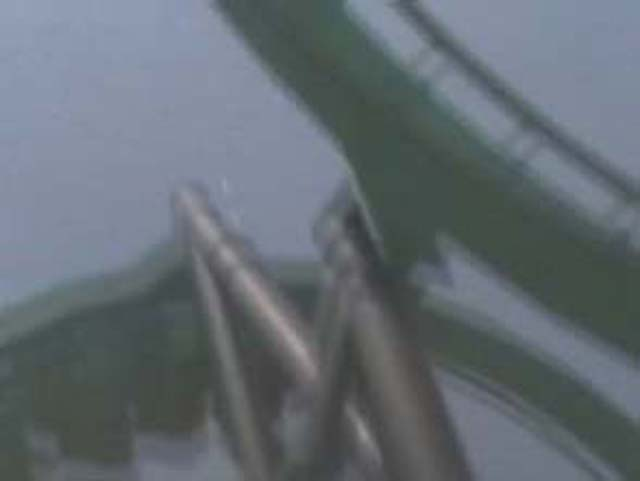
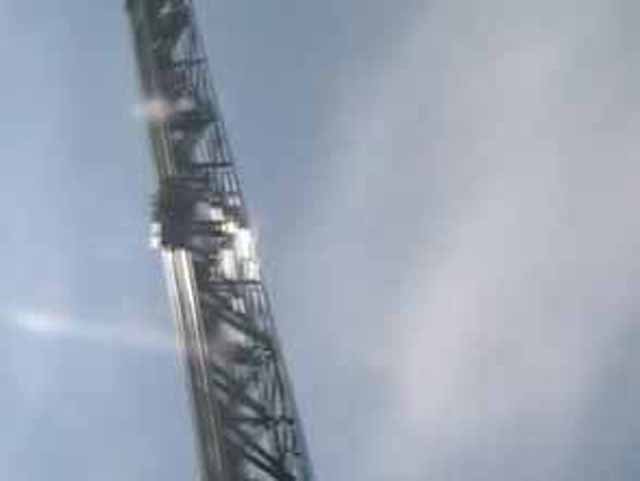
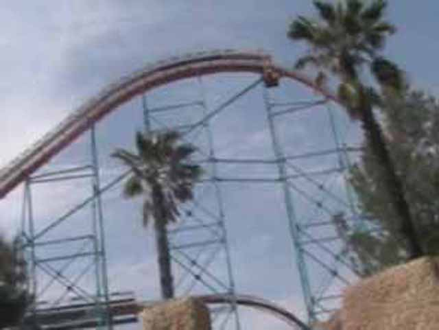
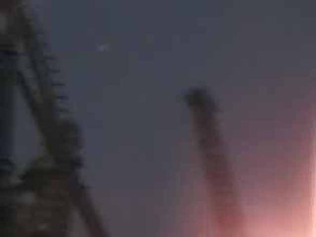

13th Birthday Party
My 13th Birthday Party. Just me, my mom and my friends at Six Flags Magic Mountain all day. By the way, We did NOT ride Revolution today.
 Instead, we stuck ourselves to the wall on Spin out! Alisa and Isaac really enjoy that feeling!
Instead, we stuck ourselves to the wall on Spin out! Alisa and Isaac really enjoy that feeling!
We all decided to ride Goldrusher. An Arrow Mine Train. Its starting to show its age and its Arrow.
 This ground hugging helix is still smooth and the best part of the ride!
This ground hugging helix is still smooth and the best part of the ride!

Riddlers Revenge. My 3rd Favorite Steel Coaster and a great ride!
We decided to ride the Swashbuckler! The Chairswings.
We are all having way too much fun on Swashbuckler! Mylo was trying to touch the ground, I'm being a filming nut, Alisa and Daniella are seeing how high Superman is going, Andrew is Screaming "I'm Winning!" and Isaac is trying to kick Andrews chair to shut him up!

Superman wasn't going very high today!
Only Mylo has the appropriate looks for riding Bucaneer.
Andrew is too happy to be on Bucaneer!
We are such credit whores! Alisa, Andrew, Daniella, Isaac and Mylo needed their Canyon Blaster Credit!
A typical moment of Incrediblecoasters Stupidity.
Andrew is pouring Ketchup into Alisas Dr.Pepper!?!?! OH MY GOD! SICK!!!!!
The waiters at Mooseburgerlodge made me wear this hat while they sang Happy Birthday to me.
Mylo pushed my face into the mini cake!
OMG! The teacups in Bugs Bunny World spun SO fast! Its insane! Only Isaac was smart and decided to stay off.
Daniella has shot Mylo on the Kiddy Carousel.
And now she has been arrested for her crimes!

Goliath. A great hyper coaster!
 I would really like it if Magic Mtn put in MORE than 1 Airtime hill on Goliath though.
I would really like it if Magic Mtn put in MORE than 1 Airtime hill on Goliath though.
 We all really enjoyed Grinder Gearworks.
We all really enjoyed Grinder Gearworks.
We had a who fight the lateral Gs contest on Atom Smasher! (And Andrew won).
Mylo trys out the plate Toss. He was good at it.
Isaac tries the Ball Throw. He was good at it. But not as good as the Win balls game from Knotts.
I decided to try the Ball Throw myself. I'm pretty good at it!
Circus Wheel was also running crazy. Isaac was once again, the only one smart enough to stay off it.
 We are all in the sewers ready to ride Batman the Ride.
We are all in the sewers ready to ride Batman the Ride.
 A great B&M Inverted filled with forces!
A great B&M Inverted filled with forces!
 Scream. Cool ride. Mylo loves it!
Scream. Cool ride. Mylo loves it!

We ended this update by going on DejaVu twice
Home